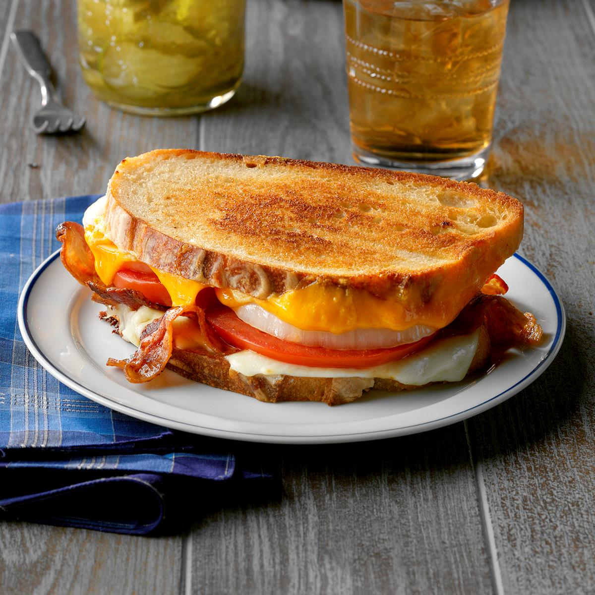

Home
Grilled Sandwiches

Grilled sandwiches are a quick and delicious snack made by layering bread with cheese, vegetables, or spreads, then grilling until golden, crispy, and perfectly melted inside. They’re easy to prepare and customizable to suit any taste.
Ingredients
- Bread slices (white, brown, or multigrain)
- Butter or mayonnaise
- Cheese slices or grated cheese
- Vegetables (tomato, onion, cucumber, capsicum, etc.)
- Salt and pepper
- Optional: green chutney, mustard, or sauces
Steps
- Spread butter or mayo on one side of each bread slice.
- Add cheese, vegetables, and seasoning between two slices.
- Spread a little butter on the outside of the bread for crispiness.
- Grill in a sandwich maker, pan, or tawa until golden brown and the cheese melts.
- Serve hot with ketchup or chutney.